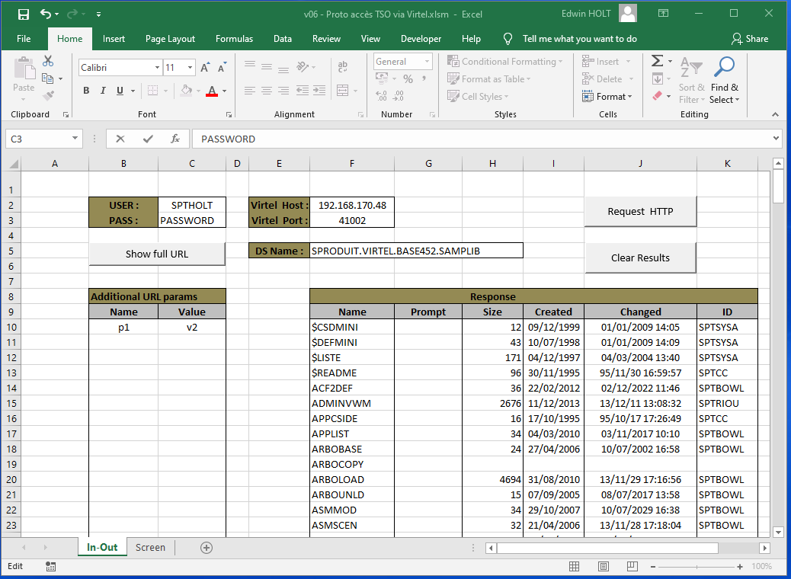
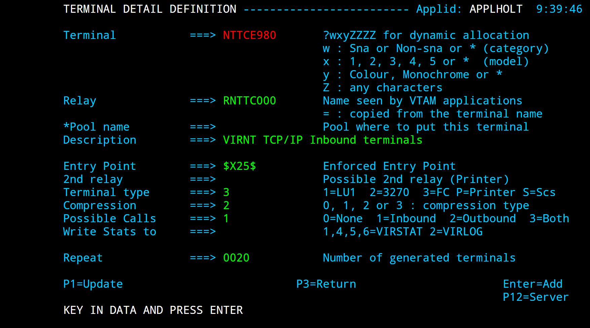
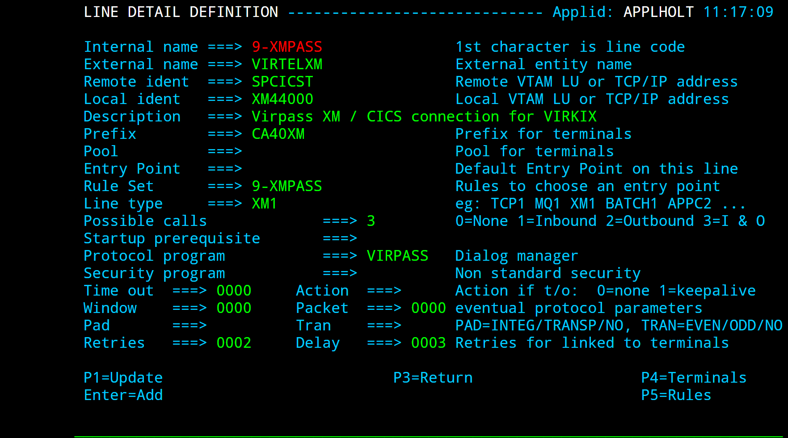
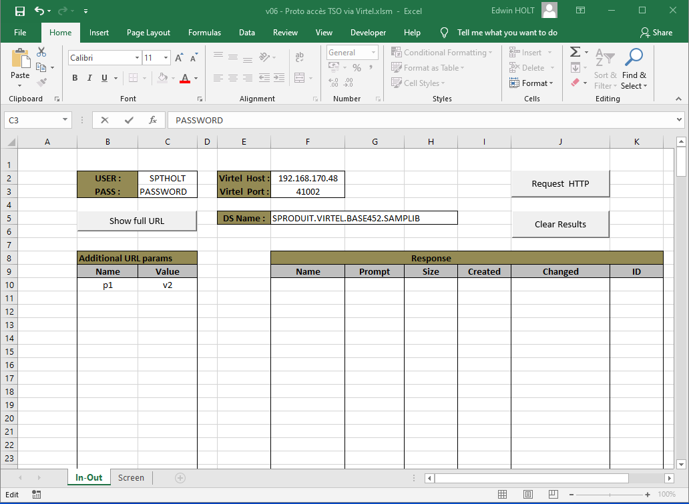
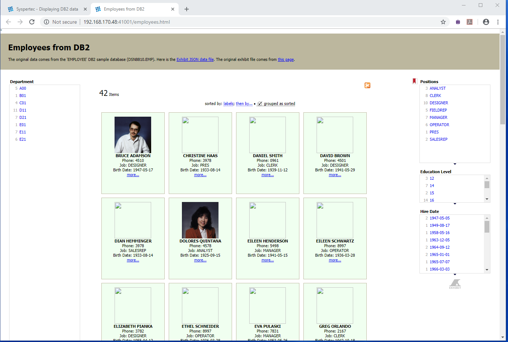
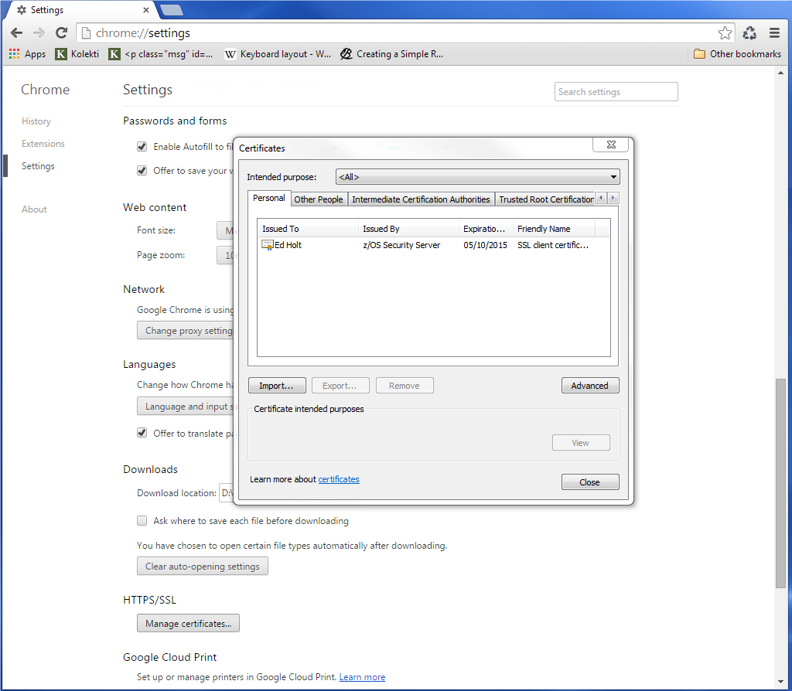
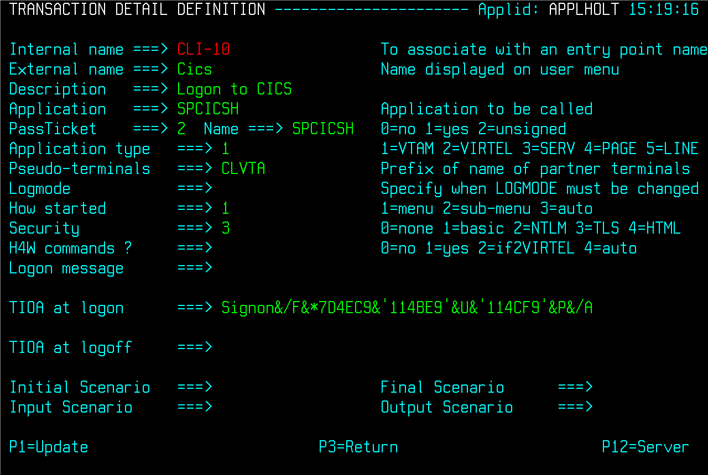

Customizing Virtel V4.59 from scratch¶
Introduction¶
In this newsletter we discuss the various customization options and features that can be applied to Virtel following a clean installation.
Customization¶
In this section we see how to customize Virtel to use customized parameters and introduce the “option” mode. We show how to set up some “global” parameter settings which will override the Virtel internal defaults. Customization comes in the form of setting user options, introducing user CSS style sheets and executing user Javascript scripts.
With regard to customization, Virtel supports three modes of customization: -
Default mode: Delivered mode of operation
Option mode: Recommended mode of operation. V4.56 upwards.
Compatibility mode: To provide “backward” compatibility for older versions of Virtel (V4.56 and less).
Default Mode¶
The default mode is running Virtel without implementing “compatibility” or “option” mode. Changes are directly made to the default entities within their delivered directories - (parameter objects, CSS styles and JavaScript scripts). The default search orders is not modified in this mode of operation.
Option Mode¶
Option mode provides a comprehensive customization solution which provides the ability to provide customization at the transaction level. For example, a TSO transaction may present a different screen presentation to a CICS transaction. In comparison, Default and Compatibility mode only provide customization at the Entry Point level at applies to all the transactions supported by that Entry point.
Compatibility Mode¶
Compatibility mode changes the search order Virtel uses when locating customized parameters, CSS, JavaScript and Help elements. Compatibility mode is used to support older versions of Virtel and also provides backward level support when migrating to new versions of Virtel. It is recommended that “compatibility” users migrate to the “Option” mode to take advantage of new Virtel features.
From Virtel V.56 onwards, compatibility mode is enforced through the following statement in the TCT:-
HTSET1=(OPTION-DEFAULT-COMPATIBILITY), *
What can be customized¶
There are several HTML entities that can be customized to provide features and functions that are user or site specific. For example, company logos in some of the presentation templates, customized ICONS on the Virtel tool bar that can launched bespoke JavaScript procedure and user Fonts and display styles. These and many more options can be set through customized JavaScript, Virtel Parameters, Cascading Style Sheets (CSS) and Help templates.
Default Ports¶
As delivered, Virtel defines two access ports, 41001 and 41002. It is important to note that 41001, by default, should only be used for the Administration of Virtel. It should not be used to support customer transactions or customized entities. Port 41002, and any other port, can be used to support customer transactions. Port 41002 is delivered as a “customized” access point to support customers legacy 3270 applications. For example, CICS, TSO and IMS based applications. Each port is associated with an Entry Point - 41001 uses the Entry Point WEB2HOST and port 41002 uses CLIWHOST.
W2H Parameters¶
Customisation of Virtel begins with understanding that the defaults are programmatically set by Virtel. These are listed in “Appendix A” of this newsletter. Most of the Virtel parameter defaults can be overridden by setting properties within a JavaScript object called w2hParm. This object is defined in a javascript member called w2hparm.js. By default it is null. Users can override the default options by coding a user w2hparm.js. A sample w2hparm.js file can be found in the delivered CLI-DIR. The following URLs can be used to show the contents of the default w2hparm.js member.
For the W2H Administration port (41001) use the following URL :-
http://192.168.170.48:41001/w2h/w2hparm-js/w2hparm.js
Any example of the default w2hparm.js would look like :-
// w2hparm.js (W2H-DIR)
// w2h parameters to override or hide.
//
// NOTE: this file is a sample and will be replaced after a new install.
// please see the documentation on possible parameter values
// and on how to set this file up in CLI-DIR instead of W2H-DIR
//
var w2hparm = {}; // <=== empty object: no overrides
//
// sample values:
// "font":"Droid Sans Mono",
// "ctrl":"ENTER",
// "ctrl":"Newline",
// "enter":"Newline",
// "enter":"ENTER",
// sample:
// var w2hparm = {"ctrl":"no","enter":"ENTER"};
//
// w2hparm parameters to hide (e.g "home" and "shiftins")
// Remove the // and update the items
// var w2hparmHide = ["home","shiftins"];
Here you can see that an empty object is defined with no overriding defaults. For the customer port, or the CLI User line (41002), use the following URL :-
http://192.168.170.48:41002/w2h/w2hparm-js/w2hparm.js
Here is what we get.
// w2hparm default values
// see w2hparmdefns in js01.js for parameters and allowable values
var w2hparm = {
"settingsGUI":{"version":"v2"},
"font":"Droid Sans Mono",
"fontsize":"window",
"ctrl":"ENTER",
"enter":"Newline",
"home":"Home",
"end":"ErEof",
"shiftins":"Dup",
"shifthome":"FieldMark",
"shiftend":"End",
"ctrlins":"PA1",
"ctrldel":"PA2",
"ctrlend":"End",
"pgup":"PF7",
"pgdn":"PF8",
"pause":"CLEAR",
"style":"3270"};
// w2hparm parameters to hide (e.g "home" and "shiftins")
// Remove the // and update the items
// var w2hparmHide = ["home","shiftins"];
You can see that some of the defaults have been overridden with “customer” options and settings. At this point line 41001 and 41002 both have different w2hparm settings. For line 41001 we have no overrides, and for 41002, we have set some specific customer options. In the following sections we look at how this can be altered so that common Virtel parameters can be set globally; set at a line or port level, or even at a transaction level using transaction “option” mode.
Defining the w2hparm.js parameter location¶
For any Virtel Entry Point/Port, the location of w2hparm.js file is determined by the transaction XXX-03P where XXX defines the entry point transaction prefix. As delivered, there are two main entry points, WEB2HOST which has a transaction prefix of W2H, and CLIWHOST with a transaction prefix of CLI. Within these Entry Points we will find the W2H-03P and CLI-03P transactions.
 Figure 1 - Example of CLI-03P transaction
Figure 1 - Example of CLI-03P transaction
CLI-03P defines the location of w2hparm.js within the CLI-DIR, as defined in the Application setting. By default, for the W2H-03P transaction, the w2hparm.js file will be found in the W2H-DIR directory. Keeping separate w2hparm entities may not be what is required. Some clients want to use only one w3hparm set up. To use only one copy of the parameter file w2hparm.js, for both CLI and W2H directories, we can modify the Application setting in W2H-03P transaction and set the location as being CLI-DIR, and not the default W2H-DIR. Now there will be one parameter file for both W2H and CLI transactions and that parameter file will be located in the CLI directory.
To modify the W2H-03P transaction use either the online Administration Portal, found on port 41001, or run the following batch job. If you are running the batch job Virtel must be down :-
//*
// SET LOAD=SPTHOLT.VIRT459.LOADLIB
// SET ARBO=SPTHOLT.VIRT459.ARBO
//*
//CONFIG EXEC PGM=VIRCONF,PARM='LOAD,REPL',REGION=2M
//STEPLIB DD DSN=&LOAD,DISP=SHR
//SYSPRINT DD SYSOUT=*
//SYSUDUMP DD SYSOUT=*
//VIRARBO DD DSN=&ARBO,DISP=SHR
//SYSIN DD *
TRANSACT ID=W2H-03P,
NAME='w2h',
DESC='Directory for w2hparm.js',
APPL=CLI-DIR,
TYPE=4,
TERMINAL=DELOC,
STARTUP=2,
SECURITY=0,
LOGMSG='/w2h/w2hparm-js'
To run this job, stop Virtel first. Also, after making any changes, refresh the browser cache to pull in any new updates. [CTRL-R or CTRL+SHIFT+DEL]
After updating the W2H-03P transaction, all W2H transactions and CLI transactions will use the w2hparm settings of the w2hparm.js file located in CLI-DIR. This can now be considered the default position with regard to customization. Any future Virtel upgrades or migrations will not affect these customised settings.
At this point both Ports 41001 and 41002 will be using a common set of Virtel parameters. The default programmatically set options and the overrides defined in the w2hparm.js file, maintained in the CLI-DIR directory. For some customers this is all that is required to meet the requirement to have a global set of Virtel Parameters; no further customization is necessary. If a new line and Entry point are added, then the XXX-03P transaction within the new Entry point just needs to refer to CLI-DIR to pick up the global parameters. In the following sections we look how to further expand setting parameters at both the Entry point (“Global”) level and transaction level using the “option” mode.
Basic customization¶
The simplest way to customize Virtel is just to modify the default w2hparm.js members in the CLI and W2H directories with user options and upload the modified w2hparm.js file to the relevant directory. This approach, however, has its drawbacks. Firstly, you have to maintain separate w2hparm.js entities for each port/entry name; secondly the w2hparm.js in the W2H directory will get overwritten during a migration/update and finally, the w2h parameters cannot be tailored to individual transaction requirements; they are global and apply to all transactions belonging to a particular line/entry point.
Since Virtel V4.56, the “option” mode was introduced to overcome these issues. We have already discussed how we can define a common set of parameters and have each line/entry point point locate it through the XXX-03P transaction. Now we will look at the customization of parameters through the use of the ‘option’ mode which provides further customization granularity.
Defining the “Option” mode¶
By using “option” mode we can target Virtel entities at an Entry Point level and Transaction level. The “option” mode provides greater flexibility and granularity on the custmization entities and allows us to configuring parameters for specific needs down to a transaction level.
The option mode allows us to set options which target :-
All transactions within an Entry point. Global option.
Specific transactions within an entry point. Transaction option. This merges and/or overrides the global options settings.
A special option member for the APPLIST transaction.
Global ‘Option’ Settings¶
Each ‘option’ is identified by a unique identifier and every option has a supporting Javascript object which contains properties or pointers to bespoke customization entities. For example CSS style sheets, Javascript scripts, etc. If you are defining the ‘global’ option settings, the identifier is labelled ‘global’ and within that option we defined an object called “global-settings” which in itself is a property of the w2hparm object. If you are defining a transaction option setting, the settings are defined within an object called oCustom.
Virtel stores option definitions in the “Option” directory which is defined by the XXX-03CO transaction.
The following is the list of properties that can be defined within a option object. They are always prefixed with the “pathTo” identifier.
Global ‘Option’ Settings Example¶
The following is and example of setting the global-settings properties for Parameters, JavaScript, CSS and Help templates in the w2hparm.js file. The global-settings object is a property of w2hparm object. You can see that each pathTo property defines a file. Within these files we will find the customized elements.
// My Global options . . .
var w2hparm = {
"global-settings":{
"pathToW2hparm": "../option/w2hparm.global.js",
"pathToJsCustom":"../option/custJS.global.js",
"pathToCssCustom": "../option/custCSS.global.css",
"pathToHelp": "../option/myHelp.html"
}
}
We modify our w2hparm.js file, located in the CLI_DIR directory, to include a “global-settings” object and remove any other parameter overrides - these will be paced in the new w2hparm.global.js file. This w2hparm.js file now only defines a path to our global w2hparm overrides. The w2hparm.js file now looks like this :-
//var w2hparm = {};
var w2hparm = {
"global-settings":{
"pathToW2hparm":"../option/w2hparm.global.js"
}
};
As you can see, it has a “global-settings” object containing one “pathTo” property which directs us to a file located in the /option/ directory. The “option” directory is already predefined as part of the Virtel deliverable. See transaction CLI-03CO within the CLIWHOST entry point: -
 Figure 2 - Option Directory Transaction
Figure 2 - Option Directory Transaction
The “option” directory holds related settings within the CLI-DIR which is physically associated with the HTMLTRSF VSAM file. We know this because if we list the directories, we can see that HTMLTRSF is the physical DDNAME associated with the Virtel directory CLI-DIR :-
 Figure 3 - DDNames associated with Virtel Directories
We now need to create a global parameters file called w2hparm.global.js. This parameter file will be the equivalent to the our original w2hparm.js file, and will contain the same Virtel parameter overrides.
// w2hparm.global.js (CLI-DIR)
// w2h parameters to override defaults.
var w2hparm = {
"ctrl":"Newline",
"font":"DejaVu Sans Mono",
};
The newly created w2hparm.global.js and the modified w2hparm.js files are both uploaded to the CLI-DIR, the directory associated with the “option” transaction CLI-03CO. Stop and restart Virtel and refresh the cache (CTRL-R). Now check that the new w2hparm.js parameter file is being used on both the W2H and CLI entry point. As before, we use the following URL to display the W2H related w2hparm.js file.
http://192.168.170.48:41001/w2h/w2hparm-js/w2hparm.js
// NOTE: this file is a sample and will be replaced after a new install.
// please see the documentation on possible parameter values
// and on how to set this file up in CLI-DIR instead of W2H-DIR
//
//var w2hparm = {};
var w2hparm = {
"global-settings":{
"pathToW2hparm":"../option/w2hparm.global.js"
}
};
Now our new “Global” path is in play, pointing to our wh2hparm.global.js parameter file, we can also check that the correct global parameter file is loaded when accessing the CLI port, 41002, using the following URL.
http://192.168.170.48:41002/option/w2hparm.global.js
The output from this display should show the the same options, as defined in the w2hparm.global.js.

Figure 4: Display of global w2hparm options
As an example, the following modifies the “enter” key default and adds a print ICON to the tool bar. As this is a global modification it will apply to all transactions running under the CLIWHOST entry point. The following actions are taken.
1. Update the default w2hparm.js to include a global setting for pathToW2hparm (“Enter key”) and pathToJsCustom (“Print ICON”). The w2hparm.js should be uploaded to the CLI-DIR directory. The transaction CLI-03P application field will also have to be updated to point to locate w2hparm.js from the CLI-DIR:-
var w2hparm = {
"global-settings":{
"pathToW2hparm":"../option/w2hparm.global.js",
"pathToJsCustom":"../option/custJS.global.js"
}
}
Create the file w2hparm.global.js file and define the required “Enter key” changes. Upload this file to CLI-DIR. To modify the keyboard Enter key:-
//CLI-DIR - w2hparm.global.js
/*
* Override default w2hparm values. Change Enter key to equal "Enter". Default = "Newline" key.
*/
w2hparm.enter="ENTER";
Create the file custJS.global.js file and define the required changes. Upload this file to CLI-DIR. This change will run a user script to add the “PRINT” ICON to the Virtel tool bar:-
//CLI-DIR - custJS.global.js
// Add Print Button To Toolbar
function after_standardInit() {
addtoolbarbutton(000,"../print.ico","Print Screen",do_print);
}
function do_print() {
window.print();
}
Note
The print.ico should also be uploaded to the CLI-DIR directory.
This has the effect of changing the tool bar for all transactions which locate w2hparm.js through the XXX-03P transaction. This would include W2h and CLI transactions as both target the w2hparm.js in the CLI-DIR. This is not what is required. We only want transactions under CLI to have these “modified” options. Transactions under WEB2HOST will require their option fields to be set to “compatibility” to ensure that the default tool bar is shown. Alternatively, we could target the requirement to apply only to certain transactions in the CLI entry point by setting up “transaction options”.
Figure 5: - Setting compatibility mode in a transaction
Transaction ‘Option’ settings¶
Transaction “option” settings use a unique “option” identifier to associate changes with a particular transaction. This identifier is defined in the transaction. For example, if only certain transactions should have the modified tool bar, as described above, then set a unique option identifiers for those transactions. The “option” identifier will be used to associate customized elements against specific transaction(s). In the following example we use the identifier “myOptions”. A transaction level “core option file”, using the format “option.*identifier*.js”, will be used to locate customized elements. Using the option identifier “myOptions” the file will be called option.myOptions.js. It should be created and uploaded to CLI-DIR. The customized settings are held in a Javascript variable named oCustom. The following actions are taken :-
Define a option.myOptions.js file to target the transaction settings. In this example we are only introducing some user javascript code to add the Print ICON to the tool bar.
//CLI-DIR - option.myOptions.js. Transaction level core option file
var oCustom={
"pathToJsCustom":"../option/custJS.myOptions.js"
}
A file called custJS.myOptions.js is created which will contain the tool bar JavaScript modification code. This too is also uploaded to the CLI-DIR directory :-
//CLI-DIR - custJS.myOptions.js
//Add Print Button To Toolbar
function after_standardInit() {
addtoolbarbutton(000,"../print.ico","Print Screen",do_print);
}
Using “option” mode in the above example will show the Print ICON on the tool bar for any transaction that implement “myOptions” as a options identifier. Other transactions will be subjected to changes defined through the “global” settings option. Transactions which have the option id set to “myOptions” will have any customized changes located through the core option file “option.myOption.js”. These will override any “global” settings. The following files are created and copied to CLI-DIR:-
option.myOptions.js - core option file for identifier "myOptions"
custjJS.myOptions.js - customized java script file for "myOptions".
w2hparm.js - contains "global-settings" attribute.
w2hparm.global.js - global settings
Files defined in the core option files “option.*identifier*.js” with the keys pathTo[key] are copied to the CLI-DIR. They will be located through the /option/ pathname. The values associated the the keys pathTo[key] can be any file name and not necessarily the names used in the examples. The /option/ path is always required. For example:-
//CLI-DIR - option.myTest.js. Transaction level option settings
var oCustom={
"pathToW2hparm":"../option/my_parms.js"
}
Compatibility “Option”¶
Transactions can set the “option” identifier to compatibility to force the “compatibility” mode of operation. Customized element search would be through the “old” location search. for example, the file “custom.css” would be located through the transaction XXX-03CJ.
Using the “Transaction” HTML interface to define transaction “option” settings.¶
Using the HTML transaction display a user can click on the “Spanner” ICON to help in setting up the option files. This include building the “core option file” and the relevant Javascript and CSS files. The transaction option identfier is specified on the transaction page :-
 Figure 7: - Specifying the option identifier
On clicking the “spanner” icon a tabbed “Option” panel will be displayed. A pre-allocated core option environment, based upon the “option” field value, will be built. Two tabbed options are available, “BASIC” and “ADVANCED”:-
 Figure 8: - Defining the core option file
Figure 8: - Defining the core option file
Basic Mode¶
Within the Basic mode of operation, the Validate button will create a core option file and upload it to the CLIDIR directory. Within this file, Javascript and CSS settings keys, if selected, will point to the customisation files as defined by the “option” field. In the example below the Javascript and CSS customization files have been selected. This will effectively create a core option file option.myOptions.js which will be loaded up to the CLI_DIR. Within this core option file the key elements pathToJsCustom and pathtoCssCustom will be generated. These will point to files /option/custJS.myOptions.js and /option/custCSS.myOptions.css.
 Figure 9: - Validating the core option file
The generated core option file option.myOptions.js will look like this :-
// customization for option=myOptions
var oCustom={"pathToCssCustom":"../option/custCSS.myOptions.css",
"pathToJsCustom":"../option/custJS.myOptions.js"}
This can be modified to add other custom elements such as PrintCSS, Parm or Help. The option/custCSS/myOptions.css and option/custJS/myOptions.js would have to be created and uploaded to the CLI directory.
Advanced Mode¶
By selecting the “Advanced” mode tab, the core option file can be downloaded in preparation for further modification.
 Figure 10: - Advanced mode of operation
Figure 10: - Advanced mode of operation
User parameter settings¶
By default, the majority of settings listed in “Appendix A” can be set by each user through the Virtel Access Settings control panel. The settings ICON, a geared wheel located on the Virtel Toolbar, is normally displayed on 3270 based application displays. Selecting this ICON will open the Access settings display.
 Figure 11: Virtel Web Access Settings Panel
Figure 11: Virtel Web Access Settings Panel
When a user changes a setting, the change is preserved in the browser “local Storage” so that the next time the browser is opened the changed setting can be loaded from “local Storage” and used to support the new Virtel sessions. Changes made “locally” by a user will override any “global settings”.
Although settings are persisted in the browser”s local storage, they aren”t necessarily protected from being destroyed. For example, if the browsers cache is cleared the settings will be lost. Also, each browser has its own local storage so settings could well be different if a user opens a browser in “Firefox” and another in “Chrome”.
To get around these problems of preserving user settings, two options are available :-
Export/Import Settings
Setup the USERPARM feature
Export/Import settings¶
Settings can be exported to a “flat file” and then subsequently “imported”.
Exporting to a local file¶
Use the EXPORT option in the settings dialogue to export settings to a flat file. When exporting settings, a file called VWA-settings.json will be written to the browser”s default download file directory. For security, this directory is the only directory that the browser has write access to.
Import from a local file¶
To import the settings file, click the IMPORT button. A filesystem dialog will open allowing you to select the directory where settings JSON file to be imported resides. The contents of the JSON settings file will look very much like an object definition. Here is the contents of VWA-settings.json after changing the “Cursor” attribute to “”Bar”.

Figure 12: Example of an exported settings file
Note
Only the settings that the user has modified are saved in local storage or an exported settings file.
USERPARM feature¶
Another option to persist user settings is through the use of the Virtel”s USERPARM feature. This has the advantage in that settings are not held in the browser’s local storage, instead, the user’s settings are held on the mainframe within a Virtel directory, backed by a physical VSAM file. When a user connects, the settings will be downloaded to the browser. Equally, if a user updates their settings, any changes will be uploaded to the mainframe for persistence. So, regardless of the physical connection being used, the user will always get their settings.
A timestamp compare is used to synchronize between the browser and the mainframe. This will determine whether settings should be downloaded to the browser session, or uploaded to the mainframe.
The only caveat to using the USERPARM feature is that the user must be known to the security subsystem, so any invoked Virtel transactions must be secure transactions - i.e. have at least basic security set, security=1 defined, within the transaction. Virtel uses the user”s USERID as a key to locate the settings within the Virtel directory on the mainframe.
Setting up to run USERPARM¶
Run the following JCL: -
// SET LOAD=SPTHOLT.VIRT459.LOADLIB
// SET ARBO=SPTHOLT.VIRT459.ARBO
//*----------------------------------------------------------------*
//* JCL required to allocate a USERPARM TRSF file. *
//*----------------------------------------------------------------*
//* *
//* Before execution, change the following:- *
//* 'vvvvvv' The name of the volume for the USERPARM TRSF *
//* 'SPTHOLT' Your high level qualifer *
//* 'nnn' ' The Virtel release. For example 459 *
//* *
//*----------------------------------------------------------------*
//* *
//* Post tasks *
//* *
//* After running this job you must add the VSAM definitions for *
//* USER.TRSF to the TCT. *
//* *
//* Add:- *
//* UFILE3=(USERTRSF,ACBH3,0,10,05), *
//* ... *
//* ACBH3 ACB AM=VSAM,DDNAME=USERTRSF,MACRF=(SEQ,DIR), *
//* STRNO=3 *
//* *
//*----------------------------------------------------------------*
//* STEP 1 : Define the USERPARM TRSF *
//*----------------------------------------------------------------*
//STEP1 EXEC PGM=IDCAMS
//SYSPRINT DD SYSOUT=*
//SYSIN DD *
DELETE (SPTHOLT.VIRT459.USER.TRSF) CLUSTER PURGE
SET MAXCC = 0
DEFINE CLUSTER (-
NAME (SPTHOLT.VIRT459.USER.TRSF) -
VOL (SPT30B) -
SHR (2) -
KEYS (16 0) -
RECSZ (100 32758)) -
DATA (NAME(SPTHOLT.VIRT459.USER.TRSF.DATA) -
SPANNED -
TRACKS(200 200) -
CISZ(32768)) -
INDEX (NAME(SPTHOLT.VIRT459.USER.TRSF.INDEX) -
CISZ(512))
/*
//*----------------------------------------------------------------*
//* STEP 2 : INITIALIZE THE TRSF *
//*----------------------------------------------------------------*
//STEP2 EXEC PGM=IDCAMS
//SYSPRINT DD SYSOUT=*
//INIT DD DATA,DLM=AA
$$$$IWS.WORKREC.INW$TEMP
AA
/*
//TRSF DD DSN=SPTHOLT.VIRT459.USER.TRSF,DISP=SHR
//SYSIN DD *
REPRO INFILE(INIT) OUTFILE(TRSF)
/*
//VIRLOAD EXEC PGM=VIRCONF,PARM='LOAD,REPL',REGION=2M
//STEPLIB DD DISP=SHR,DSN=&LOAD
//VIRARBO DD DISP=SHR,DSN=&ARBO
//SYSPRINT DD SYSOUT=*
SUBDIR ID=USERPARM,
DESC='USERPARM directory',
DDNAME=USERTRSF,
KEY=UPRMS,
NAMELEN=0064,
AUTHUP=X,
AUTHDOWN=X,
FSTYPE=V,
AUTHDEL=X
TRANSACT ID=W2H-00P,
DESC='User Parameters directory',
NAME=USERPARM,
APPL=USERPARM,
TYPE=4,
TERMINAL=DELOC
TRANSACT ID=W2H-74,
DESC='Upload to USERPARM directory',
NAME=uplparms,
APPL=VIR0041C,
TYPE=2,
TERMINAL=DELOC,
STARTUP=2,
SECURITY=1,
LOGMSG=USERPARM
TRANSACT ID=CLI-00P,
DESC='User Parameters directory',
NAME=USERPARM,
APPL=USERPARM,
TYPE=4,
TERMINAL=CLLOC
/*
This will add the centralized USERPARM settings required to save user definitions to the USERTRSF VSAM file on the mainframe. This includes a new USERPARM directory - identifying the USERTRSF file, some transactions and the allocation of the new TRSF VSAM file.
Next, update and assemble the TCT to include the definitions to support the new VSAM TRSF file.
*
. . .
VIRSECU=YES,SECUR=(RACROUTE,RACF), *
UPARMS=(USERPARM), *
RAPPL=FACILITY,RNODE=FACILITY,PRFSECU=VIRTEL, *
UFILE1=(SAMPTRSF,ACBH1,0,10,01), *
UFILE2=(HTMLTRSF,ACBH2,0,10,01), *
UFILE3=(USERTRSF,ACBH3,0,10,01), *
GATE=GENERAL, *
. . .
* ============================================================
ACBH1 ACB AM=VSAM,DDNAME=SAMPTRSF,MACRF=(SEQ,DIR,OUT,LSR), *
STRNO=3
ACBH2 ACB AM=VSAM,DDNAME=HTMLTRSF,MACRF=(SEQ,DIR,OUT,LSR), *
STRNO=3
ACBH3 ACB AM=VSAM,DDNAME=USERTRSF,MACRF=(SEQ,DIR,OUT,LSR), *
STRNO=3
END
Stop Virtel and add the USERTRSF DD statement to the JCL, pointing to the newly allocated TRSF file.
Restart Virtel. Refresh the cache (CTRL+SHIFT+DEL).
Open a secure 3270 session, in our example we use TSO transaction in CLIWHOST. The security credentials are entered and we are logged into TSO.
A change is then made to the Virtel settings. In this example we set the cursor display from BOX back to BLOCK.
In the Virtel log we can see that the change has been uploaded and logged into the USERPARM TRSF :-
VIRU122I CLVTA079 FILE UPLOAD : ENTRY POINT 'CLIWHOST' DIRECTORY 'USERPARM' USER 'SPTHOLT'
FILE : '8393DD4A16F0E1C9723F9D9CFA2C39F1'
We then shut the browser, restart it, refresh the cache, and then load our TSO application from the APPSTAT menu on 41002 - the CLIWHOST entry point. On displaying the settings, it still shows “Cursor=BLOCK” which is what we want. This setting could only have come down from the mainframe when we established our TSO session. It is not the default setting for “Cursor” and local storage had been cleared through the refresh of the cache. It could have only come from the USERTRSF file.
If we look at the local storage using the developer tools option of the browser, we can see it has been populated with our settings from the mainframe :-
 Figure 13: - Display of local storage
Figure 13: - Display of local storage
Example of changing the global settings¶
Open a session browser and display the current settings. In the browser debugger (Developer Tools - PF12 in the URL bar) we can see that we have a dummy w2hparm object ” w2hparm {}.
 Figure 14: - w2hparm default settings
Figure 14: - w2hparm default settings
If we make a change in the settings dialogue, these will override any administrator settings :-
 Figure 15: - Settings Dialogue
Figure 15: - Settings Dialogue
For example, lets assume that an Virtel administrator has set some new defaults by creating a new w2h.global.js file. The w2h.global.js file looks like :-
// w2hparm.global.js (CLI-DIR)
// w2h parameters to override defaults and add DDI macro support.
var w2hparm = {"ctrl":"Newline",
"enter":"ENTER",
"pgup":"PF7",
"pgdn":"PF8",
"useVirtelMacros":{"macrosAutoRefresh":"session"}};
w2hparm.keymapping=true;
//w2hparm.synchronizeVirtelMacros=true;
These are uploaded to CLI-DIR. The following messages would be seen in the Virtel console log after the upload has completed :-
VIRHT51I HTTP-W2H CONNECTING DELOC049 TO 192.168.092.057:58301
VIRU122I DELOC049 FILE UPLOAD : ENTRY POINT 'WEB2HOST' DIRECTORY 'CLI-D
916
IR ' USER 'SPTHOLT '
FILE : 'W2HPARM.GLOBAL.JS'
VIR0052I DELOC049 DISCONNECTED AFTER 0 MINUTES
A user opens a new browser session (EDGE), and will see the new default changes reflected in the settings dialogue. PGUp and PGDown have been set to PF7 and PF8. These global settings have overridden the Virtel default settings which would have been PA1/PA2.

Figure 16: - Updated global settings
Our user wishes to override these global settings with the original PA1/PA2 settings. The user changes the settings to reflect this; the changes will be uploaded to the mainframe and the following messages will be seen in the Virtel console log.
VIRT906I HTTP-CLI SOCKET 00030000 CALL FROM 192.168.092.065:50426
VIRHT51I HTTP-CLI CONNECTING CLLOC009 TO 192.168.092.065:50426
VIR0052I CLLOC009 DISCONNECTED AFTER 0 MINUTES
VIRU122I CLVTA078 FILE UPLOAD : ENTRY POINT 'CLIWHOST' DIRECTORY 'USERP
285
ARM' USER 'CTKHOLT '
FILE : '8A4B86A3A108399F5866624546DA28C6'
Here the PGUp/PGDown settings have been modified by the user and a display of settings panel now shows the user settings in force, not the global options. The users settings will be saved in the USERPARM directory using a unique index. In our example the is 8A4B86A3A108399F5866624546DA28C6.

Figure 17: - Users new settings
To restore to the administrator”s global settings, we just press the “Defaults” button. This will download the global settings from the mainframe. A redisplay of the settings will show the restore global settings. The change also drives an upload to the mainframe so that the changes are recorded in the USERPARM directory.

Figure 18: - Restored global settings
Removing a USER”s default settings¶
A user”s settings can be removed from the USERPARM directory by deleting the key associated with the user from the USERPARM directory. For example, the key associated with userid CTKHOLT is 8A4B86A3A108399F5866624546DA28C6. If we look at USERPARM directory in the Admin portal (41001) we can see it listed.
 Figure 19: - USERPARM directory listing
Figure 19: - USERPARM directory listing
We can remove the user’s key entry by using the delete option. This will remove any user settings. The user will then have to “restore defaults” to correctly pickup up the global default parameters as defined by the Administrator.
Message VIRU122I
Running the USERPARM option can add additional message logging. The VIRU122I message can be silenced through the use of the F Virtel, SILENCE command.
USERPARM Problems¶
Problem
When I try to save my settings, I get the following dialogue box.

In the Virtel log I also see the follow messages:
VIRU122I CLVTA079 FILE UPLOAD : ENTRY POINT 'CLIWHOST' DIRECTORY 'USERP
330
ARM' USER 'SPTHOLT '
FILE : '9346CCEF695D8FF2D7C1B2DA6C81CFC8'
VIRC121E PAGE NOT FOUND FOR CLVTA079 ENTRY POINT 'CLIWHOST' DIRECTORY '
331
W2H '(W2H-DIR W2H-KEY )
PAGE : 'VPLEX=UNDEFINEDPARAMETERS-CODE.TXT' URL : '/w2h/VPLEX=un
definedPARAMETERS-CODE.txt++AjaxSession=ADvzWAAAAAAeu
Probable Cause
Maintenance level too low. Apply the latest maintenance. You must be at UPDT5708 or higher.
Problems¶
Problem
I save my user parameter changes but when I use a different PC or browser I am reverted back to my old or default settings.
Probable Cause
Insufficient RACF security. Check the Virtel log and look for any RACF violations that may be preventing a user from uploading their user parameters definitions to the mainframe repository. In the console log you may well see RACF error messages :-
ICH408I USER(CTKHOLT ) GROUP(CTKGROUP) NAME(ED HOLT ) 451
SPVIREH.USERPARM CL(FACILITY)
INSUFFICIENT ACCESS AUTHORITY
ACCESS INTENT(READ ) ACCESS ALLOWED(NONE )
VIRU121E CLVTA079 FILE UPLOAD FAILED : ENTRY POINT 'CLIWHOST' DIRECTORY
452
'USERPARM' USER 'CTKHOLT '
FILE : 'C6D24022819C599803A86BB3C42298B6'
Problem
Changed defaults not reflected in settings.
Probable cause
XXX-03P Transaction error. Make sure that all the xxx-03P transactions point to the same directory i.e. CLI-DIR, which should contain your default w2hparm.js transaction location.
To list you w2hparm.js file use the following URL :-
http://192.168.170.48:4100x/w2h/w2hparm-js/w2hparm.js
// NOTE: this file is a sample and will be replaced after a new install.
// please see the documentation on possible parameter values
// and on how to set this file up in CLI-DIR instead of W2H-DIR
//
//var w2hparm = {};
var w2hparm = {
"global-settings":{
"pathToW2hparm":"../option/w2hparm.global.js",
"pathToCssCustom":"../option/custCSS.global.css",
"pathToHelp": "../option/myHelp.html",
"pathToJsCustom":"../option/custJS.global.js"
}
};
This will list your “global” locations. You can use the following URL to list the global w2hparm.global.js file which should contain your global parameter overrides.
http://192.168.170.48:41002/option/w2hparm.global.js
// w2hparm.global.js (CLI-DIR)
// w2h parameters to override defaults and add DDI macro support.
var w2hparm = {"ctrl":"Newline",
"enter":"ENTER",
"pgup":"PA1",
"pgdn":"PA2",
"useVirtelMacros":{"macrosAutoRefresh":"session"}};
w2hparm.keymapping=true;
//w2hparm.synchronizeVirtelMacros=true;
Centralized macros and DDI¶
The following section provides details on how to implement centralized macros through Virtel”s DDI feature.
Getting ready for Centralized Macros.¶
Stop Virtel
Create and install additional RACF profiles to support DDI. The following is a sample RACF job to update RACF with the necessary profiles. It should be modified accordingly :-
Change SPVIREH to the value specified in the TCT PRFSECU= option.
Change SPGPTECH to the administration group for Virtel.
//STEP0 EXEC PGM=IKJEFT01,DYNAMNBR=20 COND=ONLY
//SYSTSPRT DD SYSOUT=*
//SYSTSIN DD *
/*-------------------------------------------------------*/
/* Directory Access */
/*-------------------------------------------------------*/
RDEF FACILITY SPVIREH.GLB-DIR UACC(NONE) /* Global Dir. */
PE SPVIREH.GLB-DIR CL(FACILITY) RESET
PE SPVIREH.GLB-DIR CL(FACILITY) ACC(READ) ID(SPGPTECH)
RDEF FACILITY SPVIREH.GRP-DIR UACC(NONE) /* Group Dir. */
PE SPVIREH.GRP-DIR CL(FACILITY) RESET
PE SPVIREH.GRP-DIR CL(FACILITY) ACC(READ) ID(SPGPTECH)
RDEF FACILITY SPVIREH.USR-DIR UACC(NONE) /* Global Dir. */
PE SPVIREH.USR-DIR CL(FACILITY) RESET
PE SPVIREH.USR-DIR CL(FACILITY) ACC(READ) ID(SPGPTECH)
/*-------------------------------------------------------*/
/* DDI / Capability */
/*-------------------------------------------------------*/
RDEF FACILITY SPVIREH.W2H-07 UACC(NONE) /* DDI */
PE SPVIREH.W2H-07 CL(FACILITY) RESET
PE SPVIREH.W2H-07 CL(FACILITY) ACC(READ) ID(SPGPTECH)
RDEF FACILITY SPVIREH.W2H-66 UACC(NONE) /* DDI */
PE SPVIREH.W2H-66 CL(FACILITY) RESET
PE SPVIREH.W2H-66 CL(FACILITY) ACC(READ) ID(SPGPTECH)
/*-------------------------------------------------------*/
/* Administrators Upload */
/*-------------------------------------------------------*/
RDEF FACILITY SPVIREH.W2H-80A UACC(NONE) /* Global Dir. */
PE SPVIREH.W2H-80A CL(FACILITY) RESET
PE SPVIREH.W2H-80A CL(FACILITY) ACC(READ) ID(SPGPTECH)
RDEF FACILITY SPVIREH.W2H-80G UACC(NONE) /* Global Dir. */
PE SPVIREH.W2H-80G CL(FACILITY) RESET
PE SPVIREH.W2H-80G CL(FACILITY) ACC(READ) ID(SPGPTECH)
RDEF FACILITY SPVIREH.W2H-80U UACC(NONE) /* Global Dir. */
PE SPVIREH.W2H-80U CL(FACILITY) RESET
PE SPVIREH.W2H-80U CL(FACILITY) ACC(READ) ID(SPGPTECH)
Rerun the ARBOLOAD job and specify VMACROS=YES. This will install additional transactions and directories to support centralized macros. You should see something the the following in the output.
SUBDIR GLB-DIR WAS SUCCESSFULLY ADDED
SUBDIR GRP-DIR WAS SUCCESSFULLY ADDED
SUBDIR USR-DIR WAS SUCCESSFULLY ADDED
TRANSACT W2H-03A WAS SUCCESSFULLY ADDED
TRANSACT W2H-03G WAS SUCCESSFULLY ADDED
TRANSACT W2H-03U WAS SUCCESSFULLY ADDED
TRANSACT W2H-07 WAS SUCCESSFULLY ADDED
TRANSACT W2H-66 WAS SUCCESSFULLY ADDED
TRANSACT W2H-80A WAS SUCCESSFULLY ADDED
TRANSACT W2H-80G WAS SUCCESSFULLY ADDED
TRANSACT W2H-80U WAS SUCCESSFULLY ADDED
TRANSACT CLI-03A WAS SUCCESSFULLY ADDED
TRANSACT CLI-03G WAS SUCCESSFULLY ADDED
TRANSACT CLI-03U WAS SUCCESSFULLY ADDED
TRANSACT CLI-80U WAS SUCCESSFULLY ADDED
After updating the ARBO with the new transactions, restart Virtel. Check that the new directories are accessible. Go to the Administration panel and bring up the Drag and Drop Interface. Three new directories should be visible ” GLB-DIR, GRP-DIR and USR-DIR.
Figure 20: - New directories to support centralised macros
Update w2hparm.js
Next will need to add some w2hparm parameters to the w2hparm.js file. Make the changes to your w2hparm.js member and upload to the w2hparm Directory. Most likely CLI-DIR.
"useVirtelMacros":{"macrosAutoRefresh":"session"},
"keymapping":true,
These changes turn on the centralized macro support plus the additional keymapping option. After uploading, refresh the cache (CTR-SHIFT-DEL). To check that you have the correct settings redisplay the w2hparm.js member using the following URL :-
http://192.168.170.48:41002/option/w2hparm.global.js
// w2hparm.global.js (CLI-DIR)
// w2h parameters to override defaults.
var w2hparm = {
"ctrl":"Newline",
"font":"DejaVu Sans Mono",
"useVirtelMacros":{"macrosAutoRefresh":"session"},
"keymapping":true
};
This shows that our updated w2hparm.global.js has been installed and can be located within the CLI-DIR. If you are using one w2hparm setting check that the same member is located through W2H by using the following URL :-
http://192.168.170.48:41001/option/w2hparm.global.js
If the output is same it means that both line 41001 (W2H) and 41002 (CLI) are locating the same w2hparm.global.js definitions correctly.
You can also look at the console log in the developer”s tool kit (PF12 in the URL area) and should see the following messages in the ‘console’ tab :-
Centralized settings date: 20200329194920
web2ajaxc.js:1402 No valid settings in local storage. Settings are being copied from centralized saving.
web2ajaxc.js:1501 19:54:22:776 - initSynchro(mainpageloaded)
web2ajaxc.js:1538 mainpageloaded: perform vwa_initAdminJS, index=2
web2ajaxc.js:1501 19:54:22:776 - initSynchro(customjsloaded)
web2ajaxc.js:1215 saving to local storage
web2ajaxc.js:4898 load css pour 3270
web2ajaxc.js:1501 19:54:22:821 - initSynchro(w2hparminitialized)
web2ajaxc.js:1538 w2hparminitialized: perform initDOM, index=2
web2ajaxc.js:4129 w2hparm.useVirtelMacros.macrosAutoRefresh=session
web2ajaxc.js:4154 First access in the browser session : retrieve the VIRTEL macros with 'session' option.
web2ajaxc.js:1538 w2hparminitialized: perform initWEB2AJAX, index=2
web2ajaxc.js:1501 19:54:22:869 - initSynchro(3270cssloaded)
web2ajaxc.js:1538 3270cssloaded: perform vwa_initAdminCSS, index=2
web2ajaxc.js:1501 19:54:22:870 - initSynchro(customcssloaded)
web2ajaxc.js:7335 3278T graphic characters escaping deactivated.
web2ajaxc.js:1501 19:54:22:915 - initSynchro(first3270data)
Check the DDI is active. You can do this by launching a TSO session in both W2H and CLI. In each case, check that the Macro ICON in the tool bar is blue, indicating DDI is on, and not Green, which means that DDI disabled/not implemented.
 Figure 21: - Blue ICON to indicate DDI active
Figure 21: - Blue ICON to indicate DDI active
Creating a User macro¶
Create a test macro using the macro record button. When you go to save the macro, you will be given the option to associate the macro with a key sequence. Enter a macro name and press the save key.

Figure 22: - Test macro
The macro will be saved to your local storage/user directory. The following panel will be displayed :-

Figure 23: - Macro saved to user directory
The following upload message, VIRU122I, should also appear the the system log :-

Figure 24: - Upload message with User macro
With DDI/macro support you do not have the ability to export or import macros. This function can only be performed in a non-centralized mode. For security reasons group and global macros can only be administered by the Virtel administrator(s). Users can only maintaining their own user macros, they cannot create Group or Global macros. Getting macros into the DDI repository directories is performed through the DDI import feature. In the next section we will create a dummy macro, and import it into the global directory of the DDI repository.
Creating a Global macro¶
To create a global macro, we will setup a Virtel line which is not running DDI so we have access to the import/export option. We can easily do this by setting the Administration line 41001 back to the original w2hparm.js defaults, thereby disabling the DDI/macro functionality, and providing the import/export feature.
Open up the Admin portal on 41001 and change the W2H-03P transaction to point back to W2H-DIR, refresh the cache. The Macro ICON should now be back to Green and if we look at the Macro panel we will see that we have the Import/Export feature back. We can use this environment to create and export macros. These macros can then be imported into the DDI/macro repository.
 Figure 25: - Non DDI macro interface
Figure 25: - Non DDI macro interface
We create a local macro called SDSF which, from the primary ISPF option menu, invokes SDSF, issues a LOG command, and then a SDSF TOP command.
We save the macro and call it SDSF
We select the EXPORT button to export the macro. All exported macros are called macros.json and will be written to the browser”s default download directory.
The exported file will look like this :-
{"macros":[{"name":"SDSF","rev":1,"def":[61,115,"ENTER",108,111,103,"ENTER",116,111,112,"ENTER"]}],"fmt":2}
Now we want to import this macro.json file into the Global directory of our DDI repository and make it available to everyone. To do that we have to open the DDI interface from the Administration Port and “Drag & Drop” the macros.json file into the Global Directory.
Open the DDI interface from the Administration Portal (41001) and select the Global Tab.
 Figure 26: Global directory zone of the DDI interface
Figure 26: Global directory zone of the DDI interface
Drag and drop the macros.json file into the D&D area (Area surrounded by dotted lines). Refresh the area by clicking the Refresh ICON button - button in the Top Left of the Global Tab. You should now be presented with the refreshed Global Directory which now contains the macros contained within the macros.json file - in our case just one macro called SDSF.
 Figure 27: Global Directory with macros.json file
Figure 27: Global Directory with macros.json file
If we open up a TSO or CICS session with an active DDI (blue ICON), for example under 41002, we should see that our Global Macro Area has now been populated with the SDSF macro.
 Figure 28: Global Macro display
We also have some other “user macros” that this user is maintaining - “logon” and “logoff”.
Creating a Group macro¶
A Group macro is associated with a particular RACF group and will only be displayed in the Group Macro list if the user is a member or connected to that Group. Creating a Group macro follows along with the same process as creating a Global macro. We create a macros.json file, using the Export/Import functions of a non-DDI macro interface (Port 41001), which will contain our group macros. We then export the group macros as a macros.json file and then import it into the Group directory of the DDI repository using the drag and drop area.
The difference with Group macros is that we have to specify the Group that the macros.json file will belong to when opening up the Group area in the DDI interface. When selecting the Group Tab of the DDI area we specify the Group :-
 Figure 29: Enter Group Name for Group macros
Figure 29: Enter Group Name for Group macros
In our example we enter a group name, press the green tick, and then drag and drop our group macros.json file into the Group DDI zone area. That will initiate an upload of the file :-
 Figure 30: Adding a group macro
Figure 30: Adding a group macro
Once we refresh the DDI zone area, the macros located within the macros.json file will be listed. When can now display the available macros in our TSO 3270 session. If we refresh the macro display by hitting the refresh button, we should see all the macros listed in the group section :-

Figure 31: Group Macro display
Administration Functions¶
Regardless of which of the three directories you are working on, USER, GROUP and GLOBAL, the macros are awlays contained in a file called macros.json. There will be one such file for the GLOBAL directory, one for each GROUP and one for each USER. The macros.json file contains all the macros for that particular DDI entity - USER, GROUP or GLOBAL directory.
As a Virtel Administration you have various functions available to you that you can use to manage the contents of these macros.json files. If you right click on the macros.json file within the DDI list you will see a Pop-Up box providing various administration tools. These include :-
 Figure 32: Administrator Options
Figure 32: Administrator Options
Download ” You can download a macros.json file and edit it to add additional macro entries manually. This can then be uploaded back into the DDI repository.
Copy ” Copy is not really applicable here as all macros.json files must reside in the USR-DIR. You can use this function to copy the macros.json files to a backup directory. The back-directory would have to be pre-allocated using the similar JCL that was used to create the USR-DIR VSAM file.
Delete ” Delete the macros.json file.
Edit ” Edit the contents of the macros.json file.
 Figure 33: Editing a macro within DDI
Figure 33: Editing a macro within DDI
Problems¶
Problem
I get the message - Virtel is not configured for dynamic directories message.

Probable cause
You have not run the ARBOLOAD with VMACROS=YES.
Solution
Make sure you are using a transaction with security set. Refresh the cache with the following commands :-
CTRL-SHIFT-DEL
CTRL R
Problem
I get the message - Cannot access the directory XXX-DIR

Probable cause
Out of Sync condition or no transaction security.
If the Virtel cache is out of sync with the DDI/macro settings or you are trying to access DDI macros using a non-secure transaction i.e. TRANSACTION SECURITY=0 , then the following page can appear when pressing the macro ICON button.
Solution
Make sure you are using a transactions with security set. DDI will not work if it cannot identify a user by their userid. Refresh the cache with the following commands :-
CTRL-SHIFT-DEL
CTRL R
HTTPS and setting up a secure link¶
Defining a new line and transaction¶
In this section we look at setting up a secure HTTPS link to Virtel. We will be using a STC procedure called SPVIREHV which has been assigned a RACF userid and group. We will need the STC userid when defining the RACF definitions for the KEYRING etc. We will define a new line, along with its related Virtel components such as Entry Points, transactions and terminals. This new line will be bound to port 41003 and will use the services of AT-TLS to secure the connection between the browser and the mainframe. The link will access only one CICS application.
Creating the new Virtel line¶
Run the sample template job as listed in Appendix B.
Modify accordingly to your site standards. In the template example we define a line on Port 41003 with the following Virtel details :-
Directory: SEC-DIR
Entry Point: SECHOST
Transaction Prefix: SEC
Default terminal pool: *W2HPOOL
VTAM Relay prefix: SEVTA
Terminal prefix: SELOC
Transactions: SEC-00, SEC-03W, SEC-03P, SEC-03X, SEC-04, SEC-90, W2H-80S
Add the following definition to the Virtel VTAM major node member in VTAMLST
SEVTA??? APPL AUTH=(ACQ,PASS),MODETAB=ISTINCLM,DLOGMOD=SNX32703,EAS=1
Start up Virtel and display the lines with the following Virtel command :-
F Virtel,Lines
We should see that the new lines are OPEN and connected to TCP/IP.
F SPTHOLTV,LINES
VIR0200I LINES
VIR0201I VIRTEL 4.59 APPLID=VIRTEL LINES
VIR0202I ALLOCATED IP ADDRESS = 192.168.170.048
VIR0202I INT.NAME EXT.NAME TYPE ACB OR IP
VIR0202I -------- -------- ----- ---------
VIR0202I C-HTTP HTTP-CLI TCP1 :41002
VIR0202I E-HTTP HTTP-SEC TCP1 :41003
VIR0202I W-HTTP HTTP-W2H TCP1 :41001
VIR0202I ---END OF LIST---
Open a Virtel session on line 41003 with the following URL - 192.168.170.48:41003.
The APPSTAT menu should appear with just one entry for SPCICST.
 Figure 34: CICS application under 41003
Figure 34: CICS application under 41003
At this point we have defined a CICS application which is supported by our new line definition. It is still accessed through a unsecured HTTP URL. In the next section we see how to install AT-TLS and secure our new line and any traffic that passes through.
Configuring AT-TLS to secure a line¶
To provide secure HTTP (https) sessions between the mainframe and client browsers, VIRTEL uses the services of the Application Transparent Transport Layer Security (AT-TLS) feature of z/OS Communication Server. AT-TLS is included with z/OS V1R7 and later releases. AT-TLS allows socket applications to access encrypted sessions by invoking system SSL within the transport layer of the TCP/IP stack. The Policy Agent decides which connections are to use AT-TLS, and provides system SSL configuration for those connections. The application continues to send and receive clear text over the socket, but data sent over the network is protected by system SSL. The supported protocols are TLS, SSLv3, and SSLv2.
TCP/IP Profile¶
You need to add the TTLS statement to your TCP/IP profile : -
TCPCONFIG
RESTRICTLOWPORTS
TTLS ; Activate AT-TLS (Application Transparent Transport Layer Security)
The Policy Agent¶
The Policy Agent (PAGENT) is a started task the provides the configuration details required bt AT-TLS to support secure sessions. If you do not already have the Communications Server Policy Agent (PAGENT) active in your z/OS system, copy the catalogued procedure EZAPAGSP from TCPIP.SEZAINST into your PROCLIB, renaming it as PAGENT.
Setting up to run AT-TLS and PAGENT¶
If you do not already run the Policy Agent, you will need to create a configuration file /etc/pagent.conf using z/OS Unix System Services. See the SSLSETUP job in VIRTEL SAMPLIB library.
This job performs the following steps :-
STEP EZBAUTH : RACF AUTHORIZATIONS FOR AT-TLS
STEP PROCLIB : COPY POLICY AGENT PROCEDURE
STEP IRRAUTH : RACF AUTHORIZATIONS FOR CERTIFICATE MANAGEMENT
STEP DCERTCA : RACF DELETE PREVIOUS SIGNING CERTIFICATE
STEP CCERTCA : RACF CREATE SIGNING CERTIFICATE
STEP DCERTIF : RACF DELETE PREVIOUS VIRTEL SERVER CERTIFICATE AND KEYRING
STEP CCERTIF : RACF CREATE VIRTEL SERVER CERTIFICATE AND KEYRING
STEP LCERTIF : RACF DISPLAY DIGITAL CERTIFICATES AND KEYRINGS
If you already run Policy Agent, you will need to find the existing configuration file and add the Virtel TTLS definitions to it. A sample configuration file can be found in the SAMPLIB library.See the member SSLSETUP.
Step PCONFIG in the SSLSETUP sample job contains a starter configuration. In both case the following changes should be made :-
Replace %virtjob% by the name of your VIRTEL started task (SSLSETUP line 70)
Replace 41000-41002 by 41002 in the LocalPortRange parameter (SSLSETUP line 71) to activate AT-TLS for VIRTEL line C-HTTP.
Replace “ServerWithClientAuth” by “Server” in the HandshakeRole parameter (SSLSETUP line 82). We will not be using Client Certificates at this stage.
After changing the PAGENT configuration start the PAGENT task or refresh it with F PAGENT,REFRESH. You Should see the following messages in the SYSLOG: -
F PAGENT,REFRESH
EZZ8771I PAGENT CONFIG POLICY PROCESSING COMPLETE FOR TCPIP : TTLS
EZZ8443I PAGENT MODIFY COMMAND ACCEPTED
Now, when we access the port 41003 with the URL https://192.168.170.48:41003 we will be presented with some certificate warning errors because of the “Self-Signed” CA certificate we are using. We continue to proceed to the address identified in the browser certificate warning page. Eventually we are presented with the APPLIST for 41003 which includes are CICS transaction :-
 Figure 35: Secure transaction with HTTPS
Figure 35: Secure transaction with HTTPS
Note
The “Not Secure” warning. This will not appear if you are not using an approved CA certificate.
Using Server and Client certificates¶
In this section we look at setting up Virtel to work with client and server certificates and to effectively remove the need for a user to provide a user id and password. This is equivalent to the Express Logon Feature (ELF) provided by Host on Demand and other Telnet clients.
First, let’s review what is going on behind the scenes with certificate authentication and X.509 certificate validation within TLS/SSL. The guiding principle here is that Public Key Infrastructure (PKI) requires that data encrypted with a public key can only be decrypted with a private key and data encrypted with a private key can only be decrypted with a public key. The secure session (https) that runs between the browser and Virtel uses the Application Transparent Transport Layer Security feature of z/OS Communications Server, also known as AT-TLS. AT-TLS allows socket applications to access encrypted sessions by invoking Secure Socket Layer (SSL) within the transport layer of the TCP/IP stack. A policy agent (PAGENT) is used to configure AT-TLS using parameter statements which will determine which sessions are to use AT-TLS. AT_TLS inserts itself in the connection between the application and browser. This means that the application will send and receive clear text over the socket interface, but data over the network is encrypted by system SSL.
System SSL has three supported protocol levels: • TLSv1 • SSLv2 • SSLv3 In this configuration we will be using SSLv3.
Handshake protocol¶
The server / client process, which in Virtel’s case is the Virtel started task (server) and the browser (client), implements the following SSL protocol or handshake during the “hello” phase of establishing a secure session:
The Client contacts the Server ;
The Server sends a certificate;
Server authentication is performed by the Client ;
Client sends the certificate;
Client authentication is performed by the Server ;
An encryption algorithm and single key is chosen to encrypt / decrypt data
The purpose of the authentication is to ensure that the server/client are in fact who they say they are. This is to ensure that they server/client private and public keys haven’t been stolen and are purporting to be an entity that they aren’t and thereby compromising security. Authentication uses X.509 digital certificates. Further details of this handshake and the certificate exchange can be found in the IBM Manual z/OS Communications Server: IP Configuration Guide, Appendix B. TLS/SSL Security.
Certificates¶
What’s in a X.509 certificate? Amongst other things it includes the Distinguished Name of the Server (DNS), the public key of the Server, Distinguished Name of the Server organization issuing the certificate and the issuer’s signature. If we look at a certificate held with RACF we can see this information. Certificates are identified by a combination of LABEL, USERID or Certification Authority (CA).
READY
RACDCERT ID(SPVIRSTC) LIST(LABEL('VIRTEL SSL DEMO'))
Digital certificate information for user SPVIRSTC:
Label: VIRTEL SSL DEMO
Certificate ID: 2Qji1+XJ2eLjw+XJ2ePF00Di4tNAxMXU1kBA
Status: TRUST
Start Date: 2014/07/08 00:00:00
End Date: 2015/07/08 23:59:59
Serial Number:
>05<
Issuer's Name:
>CN=z/OS Security Server.O=SYSPERTEC.C=FR<
Subject's Name:
>CN=RECETTE VIRTEL.T=VIRTEL Web Access.O=SYSPERTEC.C=FR<
Key Usage: HANDSHAKE, DATAENCRYPT
Key Type: RSA
Key Size: 1024
Private Key: YES
Ring Associations:
Ring Owner: SPVIRSTC
Ring:
>VIRTRING<
Similar details can be found in the browser settings. For example here is what Chrome displays in the HTTPS/SSL certificate database.

Figure 36: Certificate display within a browser
Types of Certificates¶
There are several types of certificates, most of which are required when defining secure sessions.
Client certificate
Server certificate
Well-known Certificate Authority (CA) Signing certificate
RACF signing certificate
In our test configuration we will be using self-signed server and client certificates. In most installation you would use server and client certificates signed by a well-known CA. These well-known CA certificates are normally available in the RACF and browser key data bases.
Configuring the certificates¶
The first step is to create the necessary certificates. We require a server certificate, a RACF signing certificate and a user certificate. In the Virtel SAMPLIB there is a member called SSLSETUP. This will initialize the SSL environment and create the RACF signing certificate. Some of the steps may or may not be relevant so you will need to customize SSLSETUP accordingly. For example, you might already be running the PAGENT started task and have RACF definitions in place to support the required SSL access.
The following is the certificate generation statement for the RACF signing certificate.
//DCERTCA EXEC PGM=IKJEFT01
//SYSTSPRT DD SYSOUT=*
//SYSTSIN DD *
/*-----------------------------------------------------------------*/
/* Delete previous signing certificate */
/*-----------------------------------------------------------------*/
RACDCERT CERTAUTH +
DELETE(LABEL('z/OS signing certificate'))
//*----------------------------------------------------------------*
//* CCERTCA : CREATE SIGNING CERTIFICATE *
//*----------------------------------------------------------------*
//CCERTCA EXEC PGM=IKJEFT1A
//SYSTSPRT DD SYSOUT=*
//SYSTSIN DD *
/*-----------------------------------------------------------------*/
/* Create a signing certificate */
/*-----------------------------------------------------------------*/
RACDCERT CERTAUTH +
GENCERT +
WITHLABEL('z/OS signing certificate') +
SUBJECTSDN( +
CN('z/OS Security Server') +
O('SYSPERTEC') +
C('FR')) +
KEYUSAGE(CERTSIGN) SIZE(1024) +
NOTAFTER(DATE(2026-06-30))
If we list this certificate after we have created it will get the following:
READY
RACDCERT CERTAUTH LIST(LABEL('z/OS signing certificate'))
Digital certificate information for CERTAUTH:
Label: z/OS signing certificate
Certificate ID: 2QiJmZmDhZmjgalh1uJAoomHlYmVh0CDhZmjiYaJg4GjhUBA
Status: TRUST
Start Date: 2013/07/03 00:00:00
End Date: 2026/06/30 23:59:59
Serial Number:
>00<
Issuer's Name:
>CN=z/OS Security Server.O=SYSPERTEC.C=FR<
Subject's Name:
>CN=z/OS Security Server.O=SYSPERTEC.C=FR<
Key Usage: CERTSIGN
Key Type: RSA
Key Size: 1024
Private Key: YES
Ring Associations:
Ring Owner: SPVIRSTC
Ring:
>VIRTRING<
The key usage identifies this certificate as a signing certificate. This certificate will be used to sign other certificates that we generate.
Next is the server certificate. Again we use RACF to generate the certificate and use the RACF signing certificate to “sign” it. The following extract is from the Virtel SAMPLIB member SSLUCERT.
//CCERTIF EXEC PGM=IKJEFT1A
//SYSTSPRT DD SYSOUT=*
//SYSTSIN DD *
/*-----------------------------------------------------------------*/
/* Create a digital certificate */
/*-----------------------------------------------------------------*/
RACDCERT ID(SPVIRSTC) /* VIRTEL userid */ +
GENCERT +
WITHLABEL('VIRTEL SSL DEMO') +
SIGNWITH(CERTAUTH LABEL('z/OS signing certificate')) +
SUBJECTSDN( +
CN('RECETTE VIRTEL') +
T('VIRTEL Web Access') +
O('SYSPERTEC') +
C('FR')) +
KEYUSAGE(HANDSHAKE DATAENCRYPT) SIZE(1024)
Note
We identify the signing certificate with the SIGNWITH parameter using the same label information that we used when defining the RACF signing certificate.
Key Rings¶
Having generated two of our certificates we now need a place to keep them. We place the certificates on a key ring and associate the key ring with the VIRTEL server RACF user id (in our case SPVIRSTC). The member SSLSETUP has some RACF commands to perform the key ring generation. Here is an extract:
/*-----------------------------------------------------------------*/
/* Create a keyring */
/*-----------------------------------------------------------------*/
RACDCERT ID(SPVIRSTC) /* VIRTEL userid */ +
ADDRING(VIRTRING)
/*-----------------------------------------------------------------*/
/* Add the certificate to the keyring */
/*-----------------------------------------------------------------*/
RACDCERT ID(SPVIRSTC) /* VIRTEL userid */ +
CONNECT( +
ID(SPVIRSTC) +
LABEL('VIRTEL SSL DEMO') +
RING(VIRTRING) +
DEFAULT)
Again it is the label that identifies the key(certificate) that we want to add to the key ring owned by user SPVIRSTC.
User Certificate¶
The next step is to create a user certificate which we will export and import into our browser’s key data base. In the Virtel SAMPLIB member SSLUCERT performs the task of creating the user certificate and creating an “exportable” file.
//*----------------------------------------------------------------*
//* Associate certificate with user id *
//*----------------------------------------------------------------*
//UCERTIF EXEC PGM=IKJEFT1A
//SYSTSPRT DD SYSOUT=*
//SYSTSIN DD *
/*-----------------------------------------------------------------*/
/* Add certificate to Server ring */
/*-----------------------------------------------------------------*/
RACDCERT ID(SPVIRSTC) /* client userid */ +
CONNECT (CERTAUTH +
LABEL('z/OS signing certificate') +
RING(VIRTRING) +
USAGE(CERTAUTH))
/*-----------------------------------------------------------------*/
/* Add certificate to Server ring */
/*-----------------------------------------------------------------*/
RACDCERT ID(SPVIRSTC) /* client userid */ +
CONNECT (ID(SPTHOLT) +
LABEL('SSL client certificate') +
RING(VIRTRING) +
USAGE(CERTAUTH))
/*-----------------------------------------------------------------*/
/* Refresh the RACF profiles */
/*-----------------------------------------------------------------*/
SETROPTS RACLIST(DIGTRING) REFRESH
SETROPTS RACLIST(DIGTCERT) REFRESH
The “CONNECT CERTAUTH” tells RACF that this is a signing CA certificate and the “CONNECT ID(SPTHOLT) indicates that the certificate labelled ‘SSL client certificate’ is associated with USERID SPTHOLT. This is how Virtel obtains the USERID. Also, note that we refresh the RACF profiles related to certificates and key rings.
If we list our key ring for user SPVIRSTC we should have three certificates.
READY
RACDCERT ID(SPVIRSTC) LISTRING(VIRTRING)
Digital ring information for user SPVIRSTC:
Ring:
>VIRTRING<
Certificate Label Name Cert Owner USAGE DEFAULT
-------------------------------- ------------ -------- -------
VIRTEL SSL DEMO ID(SPVIRSTC) PERSONAL YES
z/OS signing certificate CERTAUTH CERTAUTH NO
SSL client certificate ID(SPTHOLT) CERTAUTH NO
Importing a client/user certificate into the browser.¶
To import the user certificate into the client workstation the P12 file must be downloaded in binary and then the certificate import wizard is run on the browser to import the certificate.

Figure 37: Importing a user/client certificate into the browser
After importing the following panel is displayed:

Figure 38: An imported user/client certificate
At this stage we have completed our certificate generation. Through the use of the certificates we will be able to initiate a secure session (https) with an application and obtain a user id.
PassTicket support¶
The next step is to obtain a pass ticket in place of a password so that Virtel can log on to the target application and present a user id and password combination on behalf of the user. The following job will enable PassTicket support for our target application SPCICSH and using user id SPVIRSTC, out Virtel server user id. This job will have to be customized accordingly:
//STEP1 EXEC PGM=IKJEFT1A,DYNAMNBR=20
//* RDEFINE FACILITY IRR.RTICKETSERV
//SYSTSPRT DD SYSOUT=*
//SYSTSIN DD *
SETROPTS CLASSACT(APPL)
SETROPTS CLASSACT(PTKTDATA)
SETROPTS RACLIST(PTKTDATA)
SETROPTS GENERIC(PTKTDATA)
RDELETE PTKTDATA SPCICSH
RDELETE PTKTDATA IRRPTAUTH.SPCICSH.*
RDEFINE PTKTDATA IRRPTAUTH.SPCICSH.* UACC(NONE)
RDEFINE PTKTDATA SPCICSH SSIGNON(KEYMASKED(998A654FEBCDA123)) +
UACC(NONE)
//STEP1 EXEC PGM=IKJEFT1A,DYNAMNBR=20
//SYSTSPRT DD SYSOUT=*
//SYSTSIN DD *
PERMIT IRR.RTICKETSERV CL(FACILITY) ID(SPVIRSTC) ACC(READ)
PERMIT IRRPTAUTH.SPCICSH.* CL(PTKTDATA) ID(SPVIRSTC) ACC(UPDATE)
SETROPTS REFRESH RACLIST(PTKTDATA)
SETROPTS REFRESH RACLIST(FACILITY)
In order for Virtel to generate PassTickets, you must also modify your VIRTCT to include the parameter PASSTCK=YES and then reassemble the VIRTCT. See chapter 6 of the Virtel Installation Guide for more details on the Virtel VIRTCT.
PAGENT Configuration¶
To enable system SSL sessions to take place between the browser and the application we have to tell AT-TLS and SSL which sockets to intercept. This is configured in the pagent configuration file which can be found in /etc/pagent.conf. The two areas that we are interested in are the TTLSEnvironmentAction section and the TTLSRule section.
TTLSEnvironmentAction VIRTELenvir_inSec
{
HandshakeRole ServerWithClientAuth
Trace 7
TTLSKeyringParms
{
Keyring VIRTRING
}
TTLSEnvironmentAdvancedParms
{
SSLv2 On
SSLv3 On
TLSv1 On
ClientAuthType SAFCheck
}
TTLSCipherParmsRef VIRTELcipher
}
../..
TTLSRule VIRTELrule_in_eh
{
Jobname SPVIREH
LocalPortRange 41002
Direction Inbound
TTLSGroupActionRef VIRTELgroup
TTLSEnvironmentActionRef VIRTELenvir_inSec
}
The TTLS Rule identifies Virtel Started task name via the Jobname parameter and also the port number that can support secured sessions - https. In this case it is port 41002. The rules section also identifies the environmental section. In this case we have selected an environment section called VIRTELenvir_insec.
In VIRTELenvir_insec we identify that we want to use both server and client certificates
HandShakeRole ServerWithClientAuth
That the user certificate must be associated with a valid RACF userid
ClientAuthType SAFCheck
The name of the keyring that holds the keys(certificates)
Keyring VIRTRING
A default pagent.conf is shipped with the SAMPLIB member SSLSETUP which you can use to modify accordingly to define the above SSL sections. To refresh a pagent.conf profile after you have made changes you can issue the following z/OS command:
F PAGENT,REFRESH
Virtel Configuration¶
The final part in our configuration is to configure Virtel to use SSL to obtain the user id and PassTicket support to create a password. We configure Virtel in the transaction associated with our target application, in this case the CICS application called SPCICSH.

Figure 39: Virtel Transaction using PassTickets
Note that PassTicket is set to 2. This will enable Virtel to generate a temporary password. Security is set to 3. This indicates that Virtel will receive a USERID based upon the user certificate used in the authentication process. The TIOA at logon is a string that will logon to the CICS application using the user id and password values that Virtel has obtained. With this configuration we can logon to our CICS application without the user presenting any user id or password. This is very much like the Express Logon Facility implemented in our Telnet clients.
Logon Example¶
In the following screen shots we demonstrate logging into a CICS application via a secure session (https) without specifying any user id/password. Our initial URL is https://192.168.170.30:41002/w2h/WEB2AJAX.htm+CICS; you will replace the IP address with your own installation IP address or domain name.

Figure 40: User certificate request from browser
We are presented with a “Select a certificate” window from the browser requesting the certificate we wish to user for authentication purposes. We select the certificate we downloaded. The next panel is a warning panel which identifies that the certificate we are using has not been authenticated by a well-known CA authority. We are of course aware of this as we are using a RACF self signed certificate.

Figure 41: Browser warning when using self-authenticated certificates
We select Advanced and are then presented with information about the certificate.

Figure 42: Browser provides certificate details
We select the “Proceed” link and then we are logged on to our CICS application without having to specify any user id or password.

Figure 43: Logged into CICS using PassTickets
Problems¶
Problem
I get message VIRHT57E LINE IS NOT SET UP FOR HTTPS in the Virtel log.
Cause
This means that the browser has sent encrypted text (https) but that AT-TLS has not decrypted it before sending it to VIRTEL. The PAGENT rules haven”t correctly identified this port as a SSL jobname/port. Check the /etc/pagent.conf member. The message is a bit misleading as there is no line set-up required by Virtel. Normally AT-TLS is transparent to VIRTEL. AT-TLS performs the decryption and transforms the https request into an http request before passing it to through to VIRTEL. The only case where VIRTEL is AT-TLS aware is when the VIRTEL transaction definition specifies SECURITY=3 (TLS) and in this case VIRTEL will check that the session has been processed by AT-TLS and will issue an IOCTL to obtain the userid associated with the certificate.
Check the following :-
Is AT-TLS Service active in TCP/IP? Issue the following z/OS command ” D TCPIP,,N,TTLS. The response should be: -
EZD0101I NETSTAT CS V1R13 TCPIP 706
TTLSGRPACTION GROUP ID CONNS
VIRTELGROUP 00000002 3
1 OF 1 RECORDS DISPLAYED
END OF THE REPORT
2. Check that you have defined the correct STC name and port in the PAGENT definitions. Also check the SYSLOG for any PAGENT error messages which may well include an error code. Common session startup/handshake errors are reported through messqge EZD1287I. In the example below we can see that the handshake has failed with a return code of 5003. Return codes under 5000 are generated by System SSL and are defined in the System SSL Programming manual. Return codes over 5000 are generated by AT-TLS and are defined in the IP Diagnosis Guide. In the following the 5013 suggests that the browser has sent clear text; in other words, http was used instead of https in the URL.
BPXF024I (TCPIP) Oct 7 13:33:08 TTLS 83951769 : 15:33:08 TCPIP 367
EZD1281I TTLS Map CONNID: 000006A2 LOCAL: 192.168.170.30..41002
REMOTE: 192.168.92.62..57545 JOBNAME: SPVIREH USERID: SPVIRSTC TYPE:
InBound STATUS: Enabled RULE: VIRTELrule_in_eh ACTIONS: VIRTELgroup
VIRTELenvir_inSec **N/A**
BPXF024I (TCPIP) Oct 7 13:33:08 TTLS 83951769 : 15:33:08 TCPIP 368
EZD1286I TTLS Error GRPID: 00000002 ENVID: 00000000 CONNID: 000006A2
LOCAL: 192.168.170.30..41002
REMOTE: 192.168.92.62..57545
JOBNAME: SPVIREH USERID: SPVIRSTC
RULE: VIRTELrule_in_eh
RC: 5003 Data Decryption EZD1287I TTLS Error RC: 5003 Data Decryption 369 <=======
LOCAL: 192.168.170.30..41002
REMOTE: 192.168.92.62..57545
JOBNAME: SPVIREH RULE:
VIRTELrule_in_eh USERID:
SPVIRSTC GRPID: 00000002
ENVID: 00000000
CONNID: 000006A2
The following is a list of common Pagent Error codes that can be seen in the SYSLOG: -
7 No certificate
8 Certificate not trusted
109 No CA certificates on ring
202 Keyring does not exists
401 Certificate expired
402/12 Client and server cannot agree cipher suite
416 Virtel does not have permission to list keyring
431 Certificate is revoked
434 Certificate key not compatible with cipher suite
435 Certificate authority unknown
5003 Browser sent clear text. HTTP instead of HTTPS used in URL.
Appendix A¶
Default w2hparm parameter values¶
Keyword |
Caption |
Possible values |
|---|---|---|
“fontsize” |
Font size |
“window”, “screen”, “8”, “10”, “12”, “14”, “16” |
“font” |
Font family |
“font name” |
“autocapture” |
Auto-capture |
true, false |
“autoprint” |
Auto-print |
true, false |
“cursor” |
Cursor “Bar”, |
“Blink”, “Block” |
“vline” |
Vertical line |
true, false |
“hline” |
Horiz line |
true, false |
“esc” |
Esc key |
“no”, “ATTN”, “CLEAR”, “Reset” |
“ctrl” |
Ctrl key |
“no”, “ENTER”, “Newline” |
“cmdleft” |
Left Cmd key |
“no”, “Reset” |
“cmdright” |
Right Cmd key |
“no”, “ENTER” |
“enter” |
Enter key |
“ENTER”, “Newline” |
“home” |
Home key |
“no”, “Home” |
“end” |
End key |
“no”, “ErEof”, “End” |
“pgup” |
PageUp key |
“PF7”, “PF19”, “PA1”, “no” |
“pgdn” |
PageDown key |
“PF8”, “PF20”, “PA2”, “no” |
“pause” |
Pause key |
“CLEAR”, “ATTN”, “PA3”, “no” |
“kpenter” |
Keypad Enter |
“ENTER”, “Newline” |
“shiftenter” |
Shift+Enter |
“no”,”ENTER”, “Newline” |
“shiftesc” |
Shift+Esc |
“no”, “ATTN”, “CLEAR”, “Reset” |
“shiftins” |
Shift+Insert |
“no”, “Dup” |
“shiftdel” |
Shift+Delete |
“no”, “ErEof” |
“shifthome” |
Shift+Home |
“no”, “FieldMark”, “Home” |
“shiftend” |
Shift+End |
“no”, “ErEof”, “End” |
“shiftpgdn” |
Shift+PageDown |
“no”, “PA3” |
“ctrlenter” |
Ctrl+Enter |
“no”,”ENTER”, “Newline” |
“ctrlins” |
Ctrl+Insert |
“no”, “PA1” |
“ctrldel” |
Ctrl+Delete |
“no”, “PA2”, “ErEof” |
“ctrlhome” |
Ctrl+Home |
“no”, “PA3”, “Home”, “ChgCur” |
“ctrlend” |
Ctrl+End |
“no”, “ErEof”, “End” |
“altins” |
Alt+Ins |
“no”, “PA1” |
“althome” |
Alt+Home |
“no”, “PA2” |
“altpgup” |
Alt+PageUp |
“no”, “PA1” |
“altpgdn” |
Alt+PageDown |
“no”, “PA2” |
“altpause” |
Alt+Pause |
“no”, “ATTN”, “CLEAR”, “PA3” |
“altf1” |
Alt+F1 |
“no”, “PA1”, “ENTER” |
“altf2” |
Alt+F2 |
“no”, “PA2” |
“altf3” |
Alt+F3 |
“no”, “PA3”, “ChgCur” |
“kpslash” |
Keypad / |
“/”, “PA1” |
“kpaster” |
Keypad * |
“*”, “PA2” |
“kpminus” |
Keypad - |
“-“, “Backtab” |
“kpplus” |
Keypad + |
“+”, “Tab”, “Newline” |
“kpdot” |
Keypad . |
“.”, “,” |
“dblclick” |
Double Click |
“Word”, “ENTER”, “no” |
“urlhotspot” |
URL hotspots |
true, false |
“pfkhotspot” |
PF key hotspots |
true, false |
“pasteereof” |
Paste erase EOF |
true, false |
“pastetyping” |
Map Ctrl+V to Paste by Typing |
true, false |
“movecursor” |
Move cursor on activat |
true, false |
“style” |
Style |
“3270”, “gray”, “white” |
“printstyle” |
Print style |
“3270”, “color”, “white” |
“rtm” |
Response time monitor |
true, false |
“omitnulls” |
Omit nulls from input |
true, false |
“keepmacpad” |
Keep macro pad open |
true, false |
“keepkeypad” |
Keep keypad open |
true, false |
“hiliteinput” |
Highlight input fields |
true, false |
“caretnot” |
Remap ^ to logical not |
true, false |
“adaptfontratio” |
Adapt font size ratio |
true, false |
“charspace” |
Character spacing |
true, false |
“linespace” |
Line spacing |
true, false |
“settingsGUI” |
Uuser interface type |
v2 |
“preservein” |
Preserve insert mode |
true, false |
“nolongpoll” |
AsynchSupport |
true, false |
“MirrorMode” |
BiDirectional mode |
true, false |
“NOstretch” |
Font Size Stretch |
true, false |
Default W2H parameters: List of keywords and possible values
Note
Some settings my be deprecated and therefore may no longer be in use. They remain for reasons of downward compatibility.
Appendix B¶
Template job for adding a new line to Virtel.¶
// SET LOAD=SPTHOLT.VIRT459.LOADLIB
// SET ARBO=SPTHOLT.VIRT459.ARBO
//*
//CONFIG EXEC PGM=VIRCONF,PARM='LOAD,NOREPL',REGION=2M
//STEPLIB DD DSN=&LOAD,DISP=SHR
//SYSPRINT DD SYSOUT=*
//SYSUDUMP DD SYSOUT=*
//VIRARBO DD DSN=&ARBO,DISP=SHR
//SYSIN DD *
TERMINAL ID=SELOC000, -
DESC='Psuedo Terminals', -
TYPE=3, -
COMPRESS=2, -
INOUT=3, -
REPEAT=0016
TERMINAL ID=SEVTA000, -
RELAY=*W2HPOOL, -
DESC='HTTP terminals (with relay)', -
TYPE=3, -
COMPRESS=2, -
INOUT=3, -
STATS=26, -
REPEAT=0016
SUBDIR ID=SEC-DIR, -
DESC='SEC directory', -
DDNAME=HTMLTRSF, -
KEY=SEC-KEY, -
NAMELEN=0064, -
AUTHUP=X, -
AUTHDOWN=X, -
AUTHDEL=X
ENTRY ID=SECHOST, -
DESC='HTTPS entry point (Secure applications)', -
TRANSACT=SEC, -
TIMEOUT=0720, -
ACTION=0, -
EMUL=HTML, -
SIGNON=VIR0020H, -
MENU=VIR0021A, -
IDENT=SCENLOGM, -
SCENDIR=SCE-DIR, -
EXTCOLOR=E
TRANSACT ID=SEC-00, -
NAME=SECHOST, -
DESC='Default Directory', -
APPL=SEC-DIR, -
TYPE=4, -
TERMINAL=SELOC, -
STARTUP=2, -
SECURITY=0, -
TIOASTA='/w2h/appmenu.htm+applist'
TRANSACT ID=SEC-03CO, -
NAME=OPTION, -
DESC='Path to the OPT-DIR directory', -
APPL=CLI-DIR, -
TYPE=4, -
TERMINAL=SELOC, -
STARTUP=2, -
SECURITY=0
TRANSACT ID=SEC-03P, -
NAME='w2h', -
DESC='Directory for w2hparm', -
APPL=CLI-DIR, -
PASSTCKT=0, -
TYPE=4, -
TERMINAL=SELOC, -
STARTUP=2, -
SECURITY=0, -
LOGMSG='/w2h/w2hparm-js'
TRANSACT ID=SEC-03W, -
NAME='w2h', -
DESC='W2H toolkit directory (/w2h)', -
APPL=W2H-DIR, -
TYPE=4, -
STARTUP=2, -
SECURITY=0
TRANSACT ID=SEC-03X, -
NAME='SEC', -
DESC='SEC directory (/SEC)', -
APPL=SEC-DIR, -
TYPE=4, -
STARTUP=2, -
SECURITY=0
TRANSACT ID=SEC-04, -
NAME='CICS', -
DESC='CICS', -
APPL=SPCICST, -
TYPE=1, -
TERMINAL=SEVTA, -
STARTUP=1, -
SECURITY=0
TRANSACT ID=SEC-90, -
NAME='applist', -
DESC='List of applications for appmenu.htm', -
APPL=VIR0021S, -
TYPE=2, -
TERMINAL=SELOC, -
STARTUP=2, -
SECURITY=1
TRANSACT ID=W2H-80S, -
NAME='uplSEC', -
DESC='Upload macros (SEC-DIR directory)', -
APPL=VIR0041C, -
TYPE=2, -
TERMINAL=DELOC, -
STARTUP=2, -
SECURITY=1, -
LOGMSG=SEC-DIR
LINE ID=E-HTTP, -
NAME=HTTP-SEC, -
LOCADDR=:41003, -
DESC='HTTP line (entry point SECHOST)', -
TERMINAL=SE, -
ENTRY=SECHOST, -
TYPE=TCP1, -
INOUT=1, -
PROTOCOL=VIRHTTP, -
TIMEOUT=0000, -
ACTION=0, -
WINSZ=0000, -
PKTSZ=0000, -
RETRY=0010
Template job for deleting a Virtel line.¶
//*
// SET LOAD=SPTHOLT.VIRT459.LOADLIB
// SET ARBO=SPTHOLT.VIRT459.ARBO
//*
//CONFIG EXEC PGM=VIRCONF,PARM='LOAD,REPL',REGION=2M
//STEPLIB DD DSN=&LOAD,DISP=SHR
//SYSPRINT DD SYSOUT=*
//SYSUDUMP DD SYSOUT=*
//VIRARBO DD DSN=&ARBO,DISP=SHR
//SYSIN DD *
DELETE TYPE=TRANSACT,ID=SEC-00
DELETE TYPE=TRANSACT,ID=SEC-03P
DELETE TYPE=TRANSACT,ID=SEC-03CO
DELETE TYPE=TRANSACT,ID=SEC-03W
DELETE TYPE=TRANSACT,ID=SEC-03X
DELETE TYPE=TRANSACT,ID=SEC-04
DELETE TYPE=TRANSACT,ID=SEC-90
DELETE TYPE=TRANSACT,ID=W2H-80S
DELETE TYPE=TERMINAL,ID=SELOC000
DELETE TYPE=TERMINAL,ID=SEVTA000
DELETE TYPE=ENTRY,ID=SECHOST
DELETE TYPE=LINE,ID=E-HTTP
DELETE TYPE=SUBDIR,ID=SEC-DIR